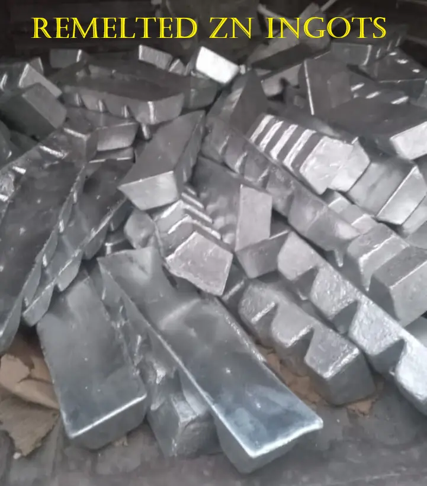

What does 90–95% remelted zinc mean?
This secondary zinc product contains 90–95% zinc by the stated product range. The remainder may include other metals; confirm actual batch chemistry before use.
Product specifications
Metallic secondary zinc for brass manufacturing and industrial alloying, subject to buyer acceptance of batch chemistry.
| Product | Remelted Zinc Ingots |
|---|---|
| Stated zinc range | 90–95% Zn |
| Primary application | Brass manufacturing |
| Other application | Industrial alloying |
| Supply location | Meerut, Uttar Pradesh |
| Order size | Specify required quantity for quotation |
| Batch report | Provided with every batch for orders above 10 MT |
Do not select a product solely on zinc percentage. The buyer should confirm permissible Pb, Cd, Fe, Cu, Al, Sn and other impurity limits for the intended use.

A report is provided with each batch of an order exceeding 10 MT. Actual composition is batch-dependent; buyer acceptance is subject to agreed specifications.
Tell us the quantity in MT, plant destination and intended brass or alloying application.
Share required impurity tolerances and any technical acceptance conditions.
We respond on availability, commercial terms and applicable batch documentation.
Common buyer questions
This secondary zinc product contains 90–95% zinc by the stated product range. The remainder may include other metals; confirm actual batch chemistry before use.
It may be suitable for brass manufacturing where the foundry accepts the full chemical composition. Tell us your permitted lead, iron, cadmium and other impurity limits.
Please send quantity in metric tonnes and the delivery destination. We do not advertise a fixed or outdated zinc price.
For orders strictly above 10 MT, a quality analysis report will be provided with each batch. Ask for the current batch specifications before ordering.